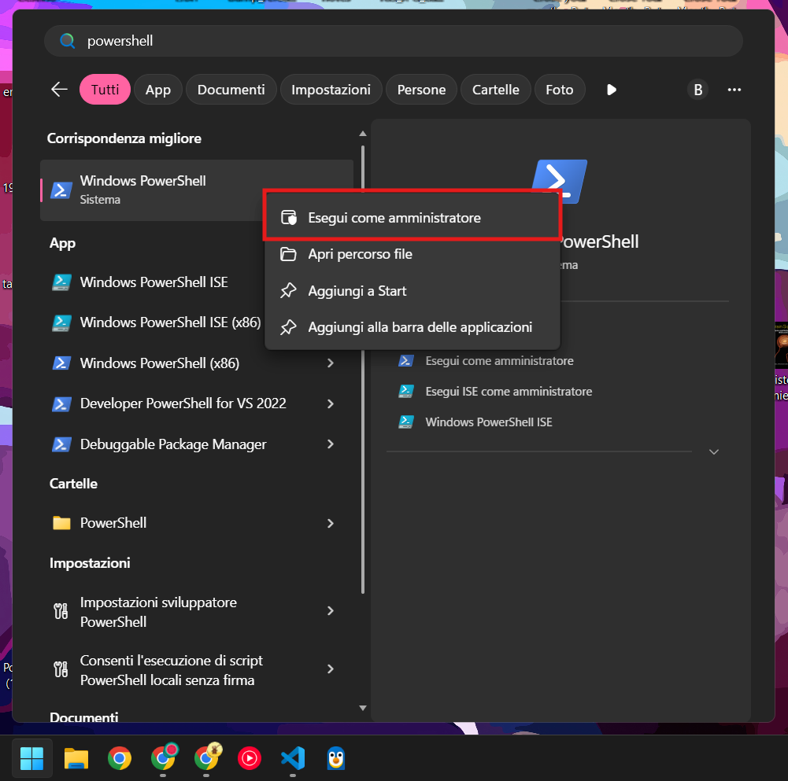
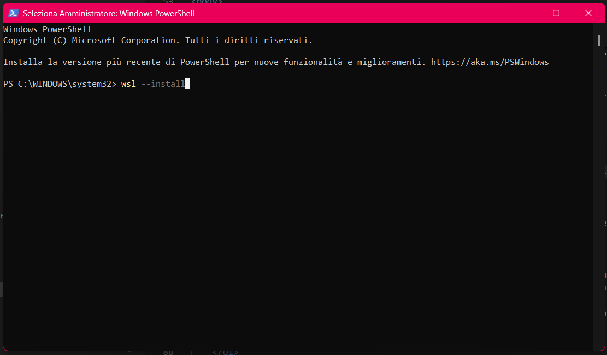
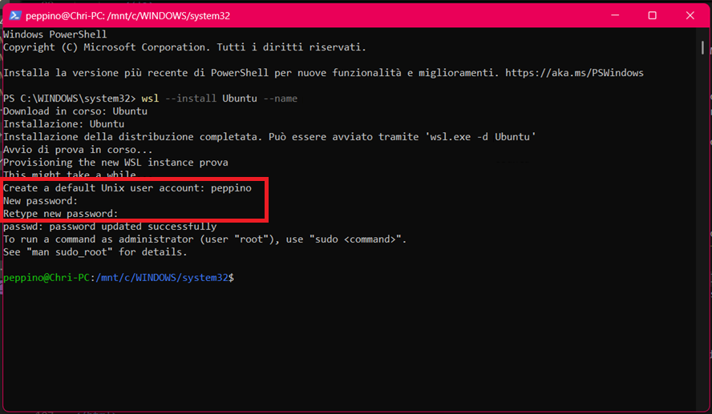
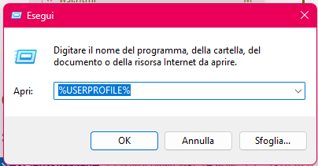
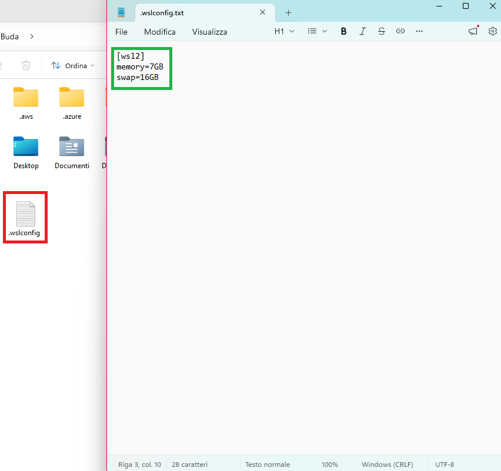
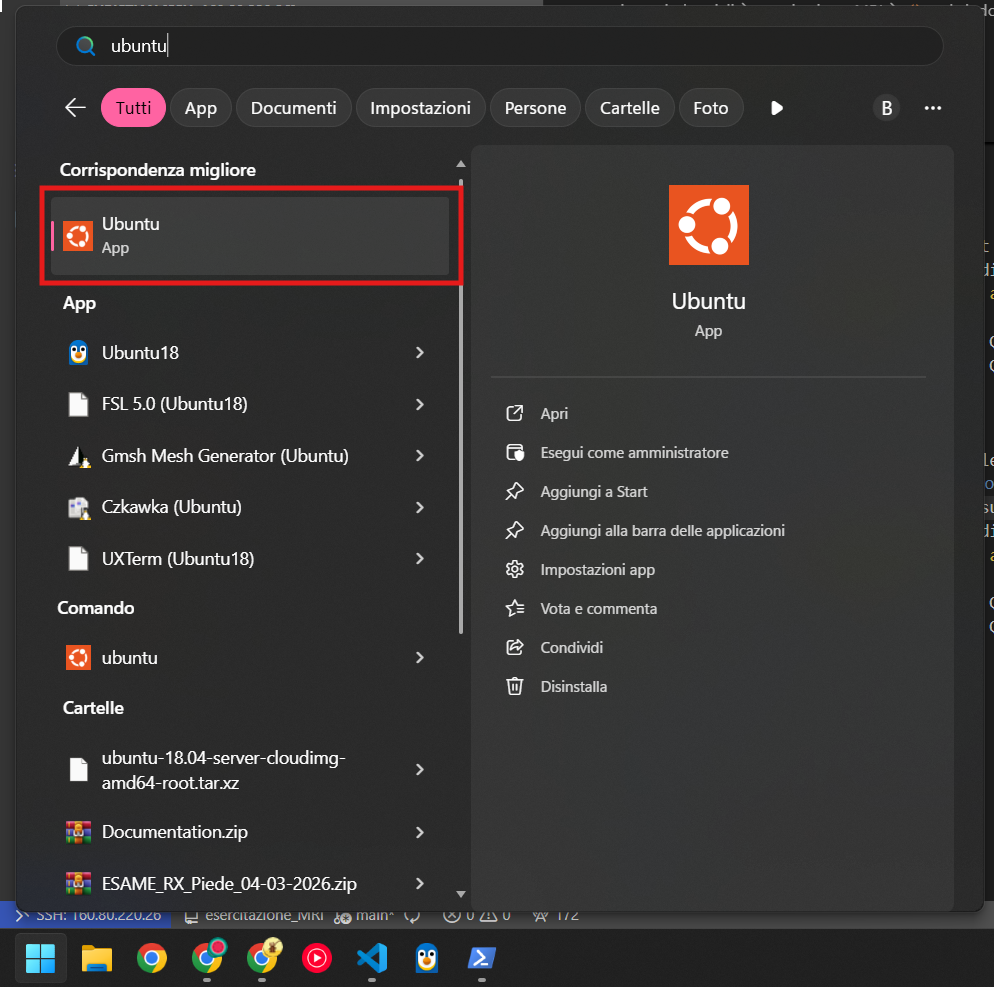
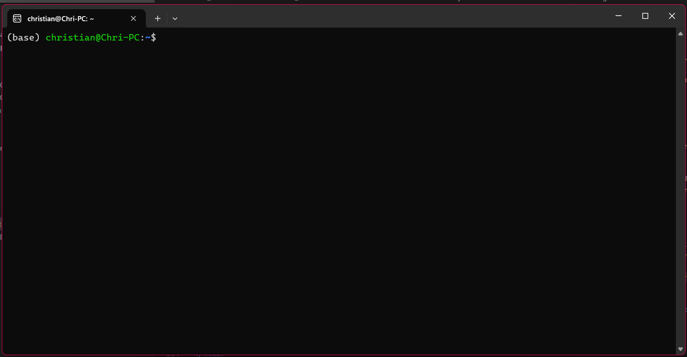

Molti tool di sviluppo sono scritti per Linux. Per questo motivo, dobbiamo installare il Sottosistema Windows per Linux (WSL). Questo ti permette di eseguire un ambiente Linux direttamente all'interno di Windows.
PowerShell.
Copia il seguente testo, incollalo nella finestra di PowerShell e premi Invio:
wsl --installSe necessario, segui le istruzioni a schermo per completare l'installazione.

Una volta terminata l'installazione, riavvia il PC per applicare le modifiche.
Una volta riavviato il PC, apri di nuovo una istanza di PowerShell come amministratore.
Copia il seguente testo, incollalo nella finestra di PowerShell e premi Invio:
wsl --install UbuntuAlla fine del processo di installazione (che potrebbe richiedere un po' in base alla velocità della tua connessione), ti verrà chiesto di creare un nome utente e una password per Linux.

Alcuni PC non particolarmente performanti potrebbero avere problemi ad eseguire i prossimi step. Per questa ragione, aumenteremo un po' la memoria che Ubuntu può usare mentre è in esecuzione.
Premi i tasti Windows+R, incolla la scritta %USERPROFILE% e premi invio.

Dovrebbe aprirsi una cartella, lì dentro, crea un nuovo file di testo e chiamalo .wslconfig.
Dentro, incolla questo blocco di testo:
[wsl2]
memory=6GB
swap=16GBEcco una finestra di esempio:

Una volta salvato il file, apri una nuova powershell (Menu Start>Cerca "PowerShell"), e incolla questo comando e premi invio:
Rename-Item -Path "$env:USERPROFILE\.wslconfig.txt" -NewName ".wslconfig"Chiudi il file di testo e la powershell appena aperti, e procedi sotto.
L'installazione è completa! Per aprire un nuovo terminale Linux, fai clic sul menu Start e digita Ubuntu.

Cliccandolo, si dovrebbe aprire una finestra simile a questa:

Nel terminale Ubuntu appena aperto, incolla questi comandi e premi invio:
sudo apt update
sudo apt -y upgrade
sudo apt install -y dc python3 bzip2 mesa-utils gedit firefox libgomp1Ti verrà chiesto di inserire una password, questa è la stessa password che hai creato poco fa!
🎉 Finito! Ora hai un ambiente Linux completo in esecuzione all'interno di Windows.
Procedi per installare FSL →